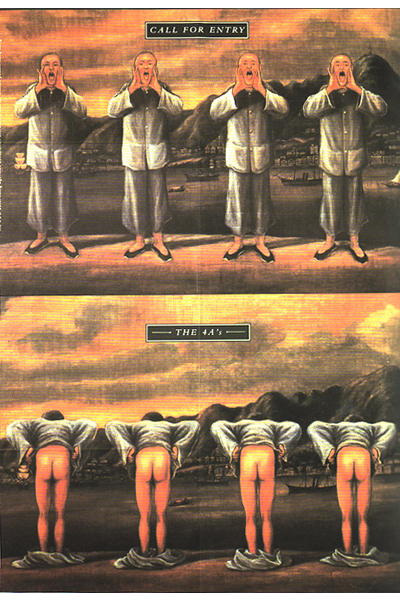
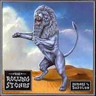
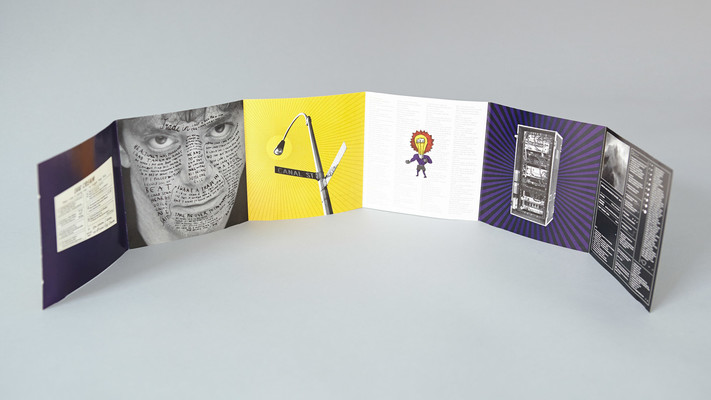

Life’s knock backs
Sagmeister applied for Graphic design at the University of Applied Arts Vienna, he was denied on first attempt due to "amateur drawing". Personally this would knock me back incredibly especially in Sagmeisters position, being that he dropped out of engineering college and pursued his dream in graphic design. To do this then be denied because his drawings were amateur I believe would affect anyone in that position, but to my astonishment it did nothing but motivate Sagmeister as he took the criticism on board and was accepted on his second attempt.
After achieving a Fulbright scholarship Sagmeister faced another setback, in being that he had to return back to Austria for mandatory military services. However he took this in his stride by staying in Austria for a bit and continuing to pursue his career in Graphic design.
Sagmeister then moved to Hong Kong where he became a typographer. In this job he was assigned the task to design a poster for the 4As advertising awards ceremony but of course Sagmeister combined his weird sense of humour and unique form of creativity and created something unsuitable and slightly unprofessional. This of course shocked and scolded the audience, furthermore throwing Sagmeister yet another setback. 
Sagmeister made yet another move to New York City where he worked at M&Co studio, but the studio soon closed and moved to Rome, just his luck
This is just a small selection of the many knock backs Sagmeister faced within his career. Some were very server and would force many people to give up but Sagmeister just got more and more motivated with every knock back allowing him to fight and achieve bigger and better things. I strongly believe without these knock backs he wouldn’t be the person he is today and wouldn’t have done all the amazing projects that he has done. I find the fact that he came back better and stronger after every setback, very inspiring. I believe it is the most inspiring aspect about him as its highlights what an incredible individual he is and encourages those around him including his many fans to be more strong minded and motivated.
Projects
In 1993 Sagmeister founded Sagmeister inc, he experienced a rough start but eventually he began getting some customers which sooner or later lead to some unbelievable projects for incredible artist.
One in particular being The Rolling stones cover for the Bridges of Babylon. The cover displays an Assyrian lion embedded into "a special manufactured filigree slipcase". 
Although Sagmeister had many projects before this I strongly believe that this particular project is one that really kick started his career. It’s an amazing piece of art, designed in such an elegant way. Both exterior and interior of this cover is dazzling and creatively fun and fitting. My favourite aspect of this piece of work is simply the desert background of the cover that was continued on throughout the booklet. It exhibits ruins that were the basis for the Bridges of Babylon Tour stage design. Consistency is always a smart and innovative aspect to design and I greatly appreciate Sagmeisters use of Consistency within this design.
Another unbelievable cover design by Sagmeister was Lou Reed’s “Set the Twilight Reeling”. The composition of this cover compliments the artist’s self and work thoroughly. The case opened up, the CD itself, the back of the booklet and the tray card all together compose a diagram of an eclipse, which essentially is the "ultimate twilight". Another well thought through, stunning design by Sagmeister.
Undoubtedly Stefan Sagmeisters greatest ‘project’, as such, is the creation of his creative agency with Jessica Walsh, Sagmeister & Walsh. Changing Sagmeister inc to Sagmeister & Walsh was a very smart decision. Sagmeister & Walsh is a studio that allows Sagmeister to display and boast about all his previous projects but more importantly get to design and create more! It’s an amazing way to brand and publicise himself in order to achieve more fun and interesting tasks, and Sagmeister makes this unbelievably easy by dividing his time up effectively.
Sagmeister pronounced that every 7 years of working, he would close the studio and he and everyone that worked with and for him would take a year off. A year to reenergise their minds to help avow more ideas to flow better and easier within the business. Sagmeister spoke of it that it was not only healthy and fun for himself, but the company as well as it allows fresh and new ideas to be acknowledged. Furthermore, he states how the average human life spends 25 years learning, 40 years working and 15 in retirement and how his 1 year break every 7 years is like taking 5 years from retirement and spreading them evenly throughout the 40 years of working life.
It is undeniably an amazing business plan but more importantly an incredible life hack. It overall improves his happiness and quality of life. This is something that’s very important to me, a successful life is dreamed upon, but a happy life is key in my eyes and Sagmeisters ‘life hack’ makes it that much easier to achieve both.
Even though this idea of his isn’t technically a project it is easily my favourite design of his. It has also granted Sagmeister the opportunity to create some of his most engaging and impressive projects.
One of my preferred projects that sagmeister invested time into over his year off was his small scheme to give back to the wild dogs that surrounded his house. He done so by displaying a portrait of every wild dog on a t shirt with a small slogan of “so many dogs, so little recipes”. The reason I love this project so much is because it portrays Sagmeisters weird and wonderful humour and just exactly who he is as a person. Humour is an intelligent and crafty way of interacting with your audience and Sagmeister does so, effortlessly.
Sagmeisters projects have never been just ‘projects’, they’re always so much more. Designed and created with so much intention and meaning. Every project is so well thought through, it adds so much meaning. Any project of his that you look into you will discover so much detail and purpose. That’s one of the most intriguing aspects about Sagmeisters work. They also reflect exactly who he is. All of his work is so easily recognisable to be his, as it imitates his personality and who he is as a person. He not only puts his entire heart, soul and mind into his work, but his humour and every awful crack of his amazing personality as well!
It’s an inspiring trait of his, a trait that makes you rethink your own work ethic. I find every single one of his projects exciting and inspirational simply because of his mindset when designing and creating each one. He is honest and raw when he indulges himself into any piece of work and that is most defiantly an attitude any artist should try to live up to.
Conclusion
In conclusion I believe it is quite clear what an inspiration Sagmeister is. He has achieved amazing and wonderful things throughout his life and done so with a trace of elegance and purity. He was faced an intense amount of horrific knock backs in life, none of which ever stopped him. He always found a new and better way to make good of his situation, an incredible attitude to have. His amazing attitude not only served him well when he was in sticky situations but when he was in good situations too. Sagmeister faced some absolutely insane opportunity’s in his life, not once did he freak at pressure. He simply used his amazing attitude to design and create extraordinary things. Every project of his whether it’s to a person’s personal taste or not, they will always be inspired by the depth of thought he put into it and that is something no critic or hater can ever take away from him. Sagmeister was born to do what he does, “design is pretty much the thing I was put on this Earth for.” He is here, on earth, designing and creating wonderful things and without a doubt making the world a better place. An absolute genius and inspiration of a person.
Top